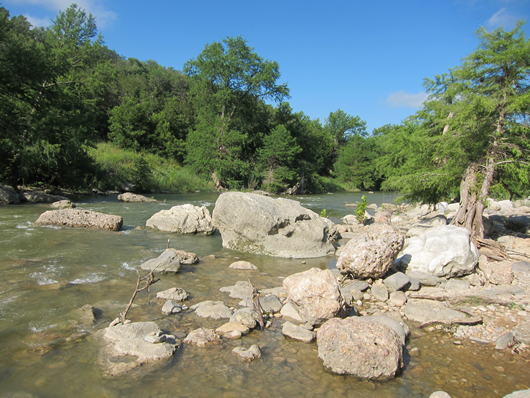

Objective: Maintain and restore instream physical habitat
(Summary information is from Southeast Aquatic Resources Partnership's Southeast Aquatic Habitat Plan )
Physical habitats are the structural elements that make streams, rivers, lakes, reservoirs and wetlands suitable for aquatic species. Examples of physical habitat in southeastern waters include stream channel morphology, substrate composition (gravel, rocks, sediment, etc.), benthic contours of lakes and reservoirs, aquatic vegetation, shoreline vegetation, overhead canopy cover, and woody debris. Physical habitat plays an important role in healthy ecosystems, providing shelter, spawning sites, nursery areas, and foraging areas for fish and other aquatic animals. It also affects water quality and energy production. When physical habitat is changed by natural storm or flood events, aging and decomposition, or anthropogenic activities, the health of the waterbody may change suddenly, slowly, or sometimes in stages following a ‘domino’ effect. Not all changes are bad, but some activities such as draining wetlands or rerouting streams through pipes or channels can result in destruction of physical habitat. Of major importance has been the large-scale loss of wetland habitats such as forested large-river floodplain, oxbow, and backwater areas, coastal marsh and seagrass beds. The structural elements of many streams and rivers, degraded by an assortment of land use practices or natural events, can be improved
using stream restoration techniques. In reservoirs, managers add new structure to offset the loss of the original woody debris, but it is difficult to add enough to maintain optimum fisheries. Reservoirs also tend to develop problems related to the presence or absence of aquatic vegetation due to water level fluctuations. The challenge is to prevent the destruction of physical habitat and promote its restoration and improvement in a manner that meets both ecological and human needs.
Instream habitat (boulder clusters) on the Pedernales River ( photo from TPWD) 
Important functions and benefits of healthy instream habitat:
- Fish and wildlife habitat
- Breeding and nursery habitat for fish, amphibians, and other organisms
- Area of increased species diversity
- Food source for terrestrial and aquatic organisms
- Bank stabilization and erosion control
- Recreational and ecotourism opportunities